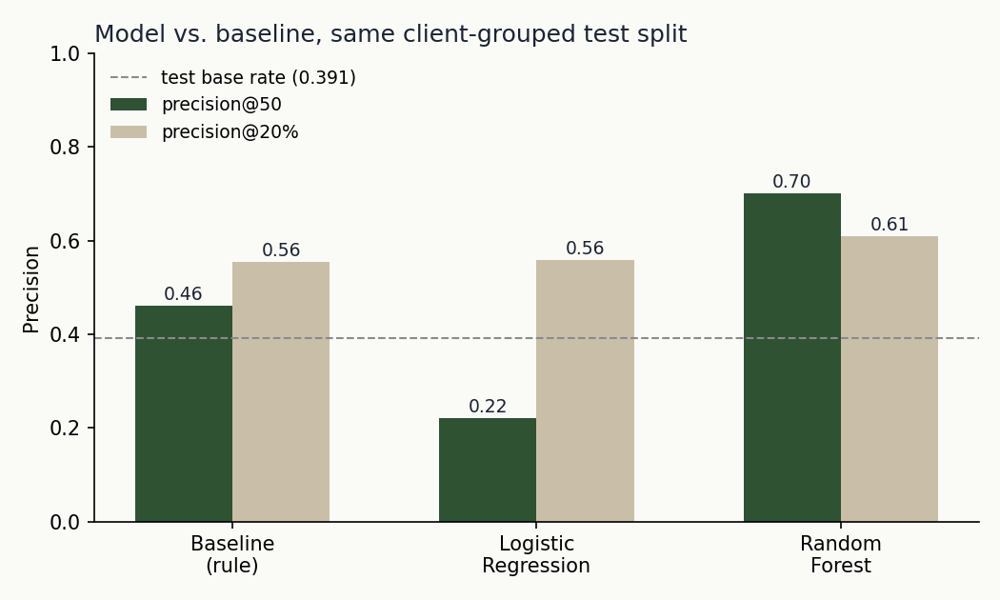
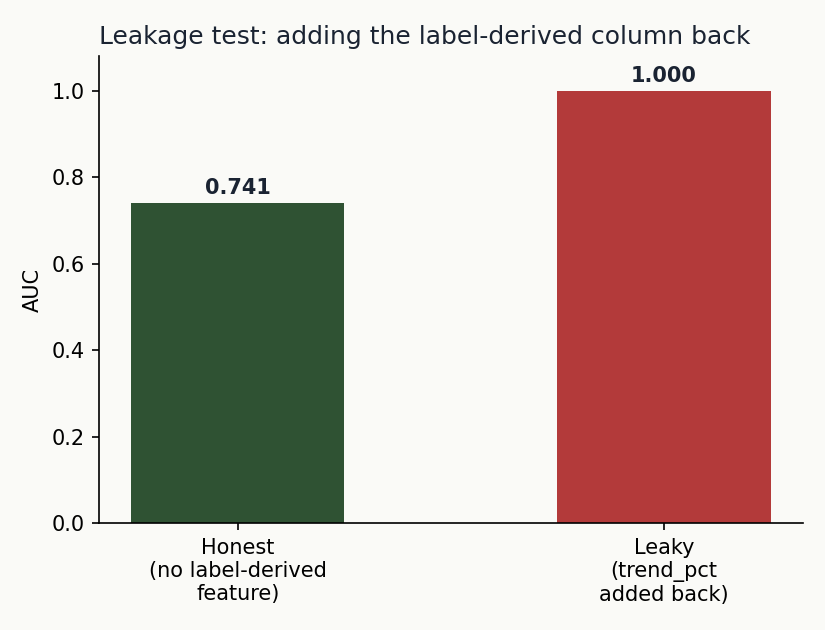

A client-grouped, leakage-audited comparison of a transparent CTR-vs-position rule against a Random Forest ranking model, built on a real content-performance dataset.
Which content pages should an editor review first for refresh, expansion, or protection, out of thousands? Using a 30,000-item slice of FlyRank's content-performance dataset across 32 clients, I built a transparent rule (CTR relative to search position) as a baseline, then compared it against Logistic Regression and Random Forest models under a client-grouped holdout split. Random Forest ranked the top of the review queue more precisely than the rule (precision@50 of 0.70 vs. 0.46), while Logistic Regression actually underperformed the rule at that same cut — a result worth reporting honestly rather than hiding. A deliberate leakage test (adding the label-derived column back as a feature) pushed the model's AUC to a perfect 1.000, confirming the honest 0.741 AUC number is real and not a leak. The result is a ranked, human-reviewed action playbook with named limits, not an automated decision system.
FlyRank's clients publish far more content than any editor can manually re-review each week. The useful output isn't a report on the whole inventory — it's a short, defensible, ranked list of the pages worth an editor's next hour. That's the real decision this project supports: not "will this page decline," but "where should limited review attention go first, and why."
A single-column rule turns out to be nearly useless for this: flagging every page with a downward impression trend catches 54.2% of the entire 30,000-item inventory — not a queue, effectively the whole catalog. The tension this paper resolves is whether a model that combines several individually weak signals can produce a genuinely useful, smaller, more precise queue — and whether that improvement survives an honest test rather than an inflated one.
This study uses the FlyRank ML Internship starter release: a 30,000-row anonymized slice of the internship data warehouse, covering 32 client accounts. Content identifiers and client identifiers are pseudonymous hashes throughout — no client names, brand names, or raw search queries appear anywhere in this paper or its underlying notebooks.
Deliberately excluded:
Label (a proxy, not ground truth): is_declining_label is defined as 1 when a page's 30-day impression trend is down more than 20% relative to the prior 30 days. It reflects recent momentum, not a confirmed editorial judgment that a page needs work — a page can be flagged as "declining" and still be perfectly healthy for reasons the label can't see (seasonality, a recent unrecorded update, a SERP feature suppressing clicks).
Baseline: a transparent rule scoring pages by visibility, position quality, and CTR gap — built after checking two candidate signals against real bucket tables first. Staleness (days since last update) came back MIXED — decline rate rose across most buckets but reversed in the stalest, smallest one — so the rule leans instead on the CONFIRMED signal: CTR relative to position, which fell cleanly from 64.7% decline rate at <0.5% CTR to 44.7% at 1.5-3% CTR across a well-populated cohort.
Model: Logistic Regression and Random Forest, trained on 13 pre-decision features (search volume, competition, word count, content age, staleness, CTR, position, engagement rate, scroll rate, AI traffic share, impressions, sessions, clicks — 90-day windows). Gradient Boosting was considered and deliberately skipped: with 32 clients and 30,000 rows, a depth-limited Random Forest already sits close to the complexity this amount of data can safely support without extra tuning risk.
Validation design: a client-grouped holdout (6 of 32 clients held out entirely), not a random row split. Content items from the same client share domain authority, editorial style, and seasonality — a random split would let the model partially learn "this looks like client X" rather than a genuinely transferable pattern.
| Method | precision@50 | precision@20% |
|---|---|---|
| Baseline (rule) | 0.460 | 0.555 |
| Logistic Regression | 0.220 | 0.559 |
| Random Forest | 0.700 | 0.609 |
test base rate = 0.391 · n(test) = 2,325 rows across 6 held-out clients

Random Forest ranked the top of the queue more precisely than the rule on both cuts. The more interesting result is Logistic Regression's: it underperforms the baseline at precision@50, a result reported here rather than hidden, because a model losing to a simple rule at one cut and tying it at another is itself informative — a purely linear model struggles to isolate the very top of this queue the way either the rule or a tree ensemble can.
Re-running the same Random Forest on a naive random row split (rather than the client-grouped one) produced precision@50 of 0.900 — a full 0.20 higher than the honest number. That gap is itself a finding: it's roughly how much of the "random split" score was the model partially memorizing which client a row came from, rather than genuine transferable signal.
Deliberately adding trend_pct back into the feature set — the exact column the label is derived from — pushed AUC from an honest 0.741 to a perfect 1.000, the textbook signature of leakage. The column was then removed, keeping only the honest result.

No causal claims are made anywhere in this paper. Every result here is observational, measured, or decision-support language — never "causes," "will improve," or "the algorithm rewards."
Four content archetypes, each mapped to a different action rather than one blanket rule:
At precision@50 = 0.70, an editor reviewing the top 50 each week spends effort on roughly 15 wasted reviews to reach 35 real ones. If precision@50 drifts down toward the dataset's ~0.54 base rate, the model is adding little over random ranking — that threshold, not an arbitrary one, is the retrain trigger. Retrain quarterly regardless, or immediately if the data contract changes.
Every number on this page traces back to an executed notebook in the linked repository.
Random seed 42 throughout. To reproduce: clone the repo, install the pinned requirements, and run each notebook top to bottom in order — each writes its own outputs to work/outputs/ and figures to work/figures/.